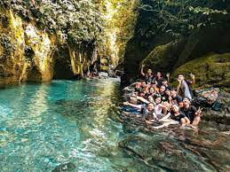

Kolam Abadi Langkat
Kolam ini merupakan aliran air dari air terjun Teroh-teroh dengan sungai yang begitu jernih. Air kolam yang jernih ini membuat bagian dasarnya dapat terlihat. Anda tidak perlu takut karena kolamnya tidak terlalu dalam dan aman untuk berenang. Jika tidak bisa berenang, pengunjung bisa menyewa life jacket. Wisatawan yang datang ke objek wisata ini tidak hanya bermain air, tetapi juga bisa melakukan aktivitas seru lain seperti menyusuri hutan dan berfoto-foto. Pengunjung yang membawa camera underwater juga bisa berfoto di dalam kolam yang airnya sangat jernih ini.